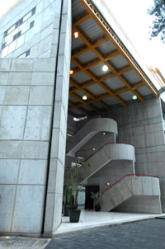

Universidad Autónoma Metropolitana – Azcapotzalco Av. San Pablo No. 180, Col. Reynosa Tamaulipas, C.P. 02200, Tel. 01 (55) 5318 9000, Del. Azcapotzalco,
CDMX. Departamento de Ciencias Básicas Edificio H, 1er piso, Tel. 01 (55) 5318 9011 y/o 01 (55) 5318-9012 , Ext. 105 y/o 106 Fax: 01 (55) 5318-9540
Dra. Alicia Cid Reborido
Introducción:
En el laboratorio de Reacciones Químicas de la Universidad autónoma
metropolitana unidad Azcapotzalco nos enfocamos a la investigación y
enseñanza del comportamiento físico y químico de diferentes sustancias,
siempre manteniendo la manipulación correcta de los materiales, reactivos y
equipos de laboratorio manteniéndonos bajo los protocolos de la
reglamentación tanto de la institución como del laboratorio en factores como
la seguridad y cuidado del medio ambiente.
Temario:
1. Introducción al laboratorio. Conocimiento y uso correcto del material de
laboratorio. Medidas de seguridad.
2. Materia. Soluciones y separación de mezclas.
3. Elementos químicos. Identificación del comportamiento químico y físico de algunos elementos.
4. Propiedades periódicas. Comportamiento químico de los elementos por grupo y/o periodo.
5. Enlaces químicos. Comportamiento de compuestos con diferentes tipos de enlace frente al agua, el calor y
a medios ácidos.
6. Enlaces químicos. Análisis del comportamiento físico de sustancias con diferentes tipos de enlace.
7. Mezclas: soluciones y coloides.
8. Reacciones ácido-base. Reacciones de neutralización.
9. Reacciones óxido-reducción. Celdas electroquímicas, fuentes de poder y electrolíticas.
10. Estequiometría. Reacciones redox.
11. Estequiometría. Reacciones de precipitación ácido base.
Bibliografía:
•
Brown T., LeMay H., Burnsten B., "Química. La ciencia central", 9a ed.,Grupo Editorial Pearson, México,
2004.
•
Chang R., "Química". 7a. ed., Mc Graw Hill, México, 2004.
•
"Manual de Laboratorio de Química I", México, UAM-Azcapotzalco.
•
"Manual de Toxicología", Secretaria de Salud, México, 1993.
•
Moore J., Stanitski C., Wood J., Kotz J., "El mundo de la química, conceptos y aplicaciones", 2a. ed.,
Grupo Editorial Pearson, México, 2000.
•
Phillips J., Strozak V., Wilstrom C., "Química, conceptos y aplicaciones", McGraw Hill, México, 2001.
•
Plunkett E.R., "Manual de toxicología industrial". Enciclopedia de la Química Industrial, Tomo 12,
Ediciones URMO, España, 1976.
•
Stricoff R., Walters D., "Laboratory health and safety handbook", 2a. Ed., Wyley Editors, E.U.A., 1990.

{kind=link}